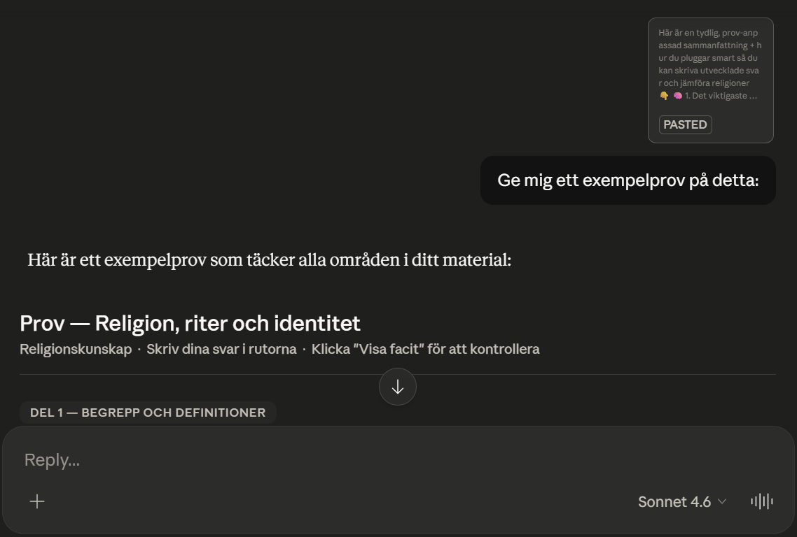
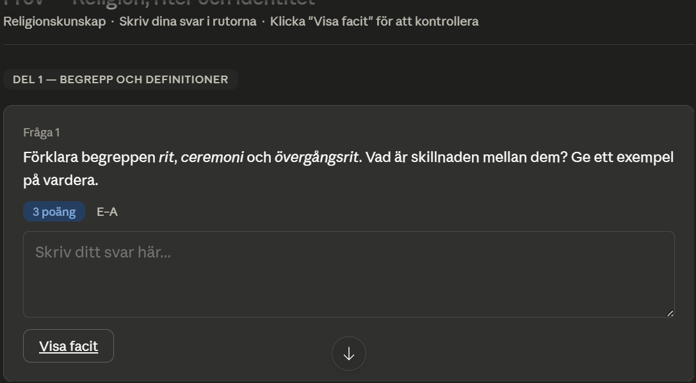
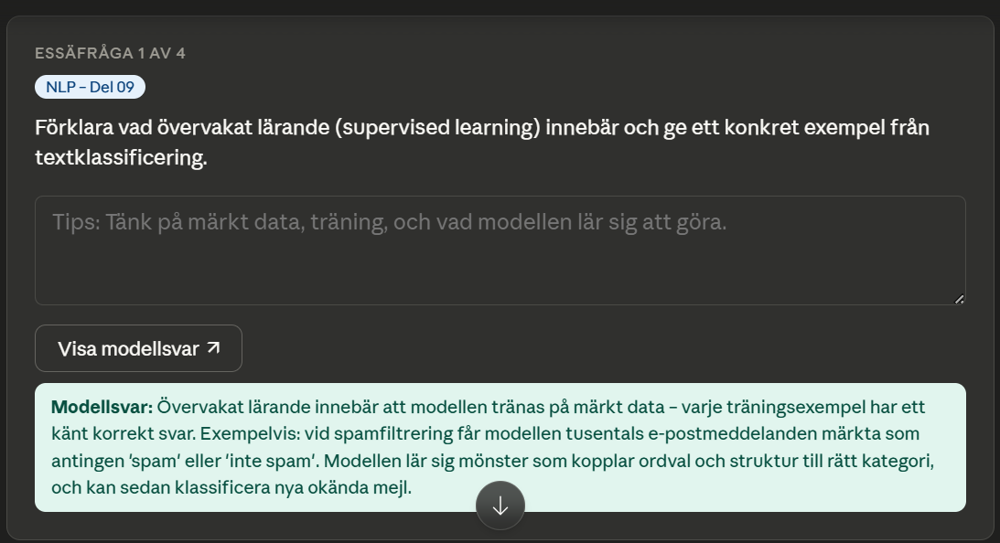
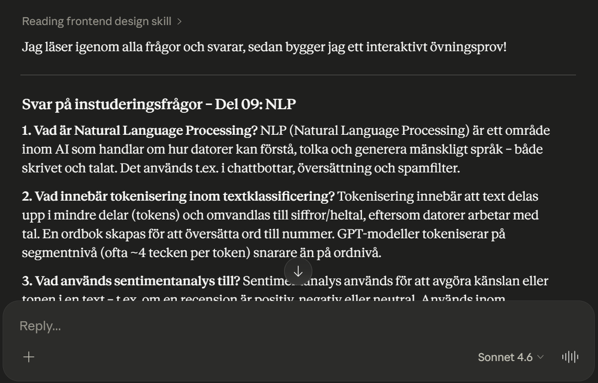
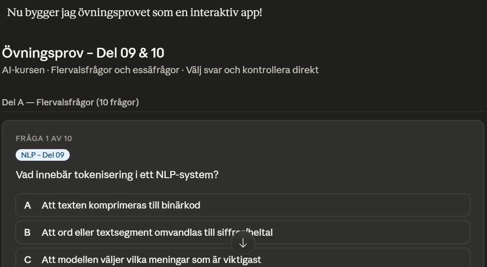
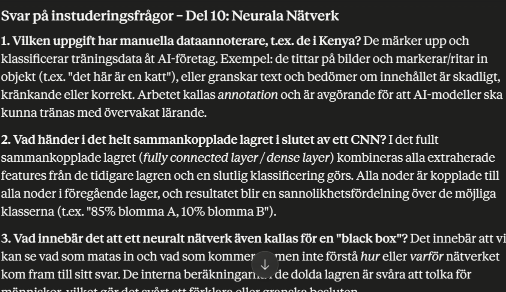
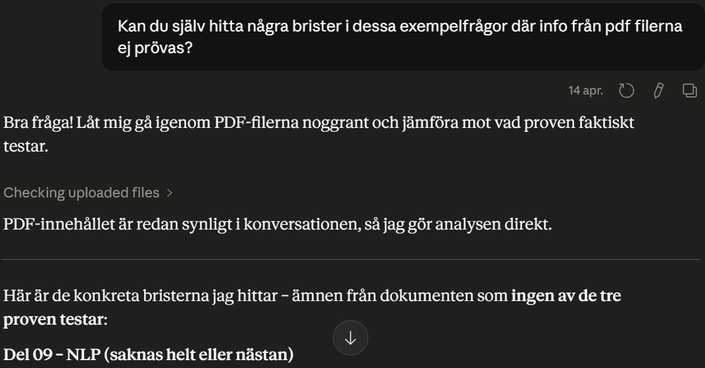

Verktyget
Claude.ai
Länk: https://claude.ai
Utvecklat av: Anthropic
Claude är en avancerad AI-assistent som är särskilt stark på att hantera stora mängder text, PDF-filer och skapa strukturerade övningsmaterial. Den har ett stort kontextfönster och visar ofta en bra självkritisk förmåga.
Kostnad: Gratisversion med begränsningar • Claude Pro kostar ca 20 USD/månad för högre användningsgränser och bättre prestanda.
Exempel 1 – Övningsprov i Religion
Jag bad Claude skapa ett exempelprov baserat på en sammanfattning från ChatGPT.





Exempel 2 – Förberedelse till AI-provet
Jag laddade upp alla PDF-filer och bad Claude besvara instuderingsfrågor samt skapa ett interaktivt övningsprov.




Test av självkritik


Min slutliga analys
Genom att testa Claude.ai i praktiken har jag sett både dess styrkor och begränsningar. Verktyget är mycket användbart för skolarbete, särskilt när det gäller att bearbeta stora mängder material och skapa övningsprov.
Styrkor
- Hantera stora PDF-filer och kursmaterial effektivt tack vare stort kontextfönster
- Skapa välstrukturerade och interaktiva övningsprov (flervals + essä)
- Imponerande självkritisk förmåga – kan hitta luckor i sitt eget material
- Naturligt och pedagogiskt språk
- Relativt låg risk för hallucinationer
Svagheter / Förbättringspunkter
- Kan ibland utelämna delar av inskickat material om prompten inte är tillräckligt specifik
- Gratisversionen har relativt hårda användningsgränser
- Kräver ibland flera uppföljande prompts för att få bästa möjliga resultat
Sammanfattning:
Claude.ai är ett av de starkaste AI-verktygen för elever just nu. Den kombinerar bra teknisk kapacitet med en ovanligt bra förmåga till självkritik. Även om den har vissa svagheter, sparar den mycket tid och fungerar som ett värdefullt stöd vid plugg och kunskapsrepetering. Jag kommer definitivt fortsätta använda Claude i framtiden.